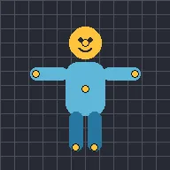

Ghim rối

Uốn lớp như một con rối: đặt ghim lên lớp, rồi kéo hoặc tạo hoạt ảnh cho ghim và hình ảnh sẽ đi theo một cách mượt mà.
Ghim rối uốn một lớp bằng ghim. Bật Thêm ghim và chạm vào lớp ở những chỗ cần uốn, tối đa 32 ghim. Sau đó tắt Thêm ghim và kéo một ghim trên bản xem trước, hoặc chạm vào giá trị X hoặc Y của ghim trong danh sách để nhập vị trí. Phần hình dưới ghim bạn kéo sẽ đi theo ghim, những ghim bạn không di chuyển giữ hình tại chỗ, và một ghim mới trên lớp đã được uốn sẽ để nguyên hình.
- Độ suy giảm quyết định cách độ uốn lan ra: giá trị cao giữ độ uốn gần các ghim bạn di chuyển, giá trị thấp trải nó mượt mà khắp lớp.
- Để tạo hoạt ảnh cho một ghim, chạm vào tên của ghim trong danh sách và dùng nút keyframe như với mọi cài đặt khác. Xem Keyframe và làm mượt.
- Mũi tên cạnh ghim đưa ghim về chỗ phần hình của nó bắt đầu, nhờ đó bỏ độ uốn của ghim đó. Thùng rác xóa ghim cùng các keyframe của nó.
- Áp dụng cho lớp con cũng uốn các lớp con, như thể chúng là một phần hình ảnh của lớp này.
- Đặt ghim lên những phần cần đứng yên, chẳng hạn phần thân khi bạn di chuyển một cánh tay.
Cài đặt
| Cài đặt | Loại | Phạm vi | Mặc định |
|---|---|---|---|
| Độ suy giảm | Số | 0.1 đến 4 | 1 |